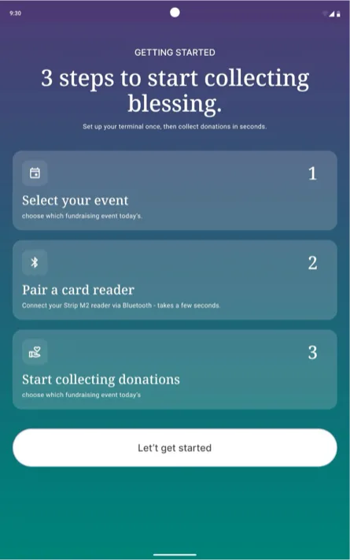
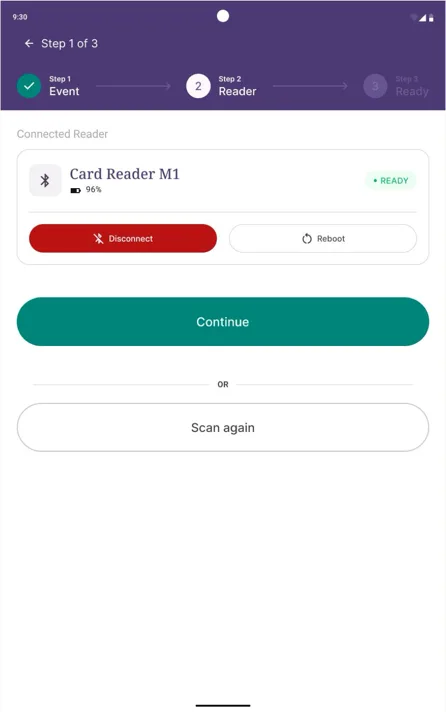
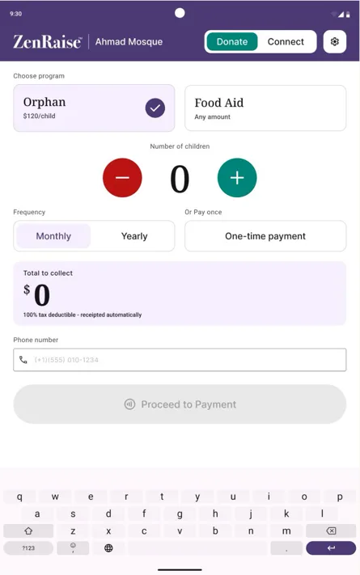
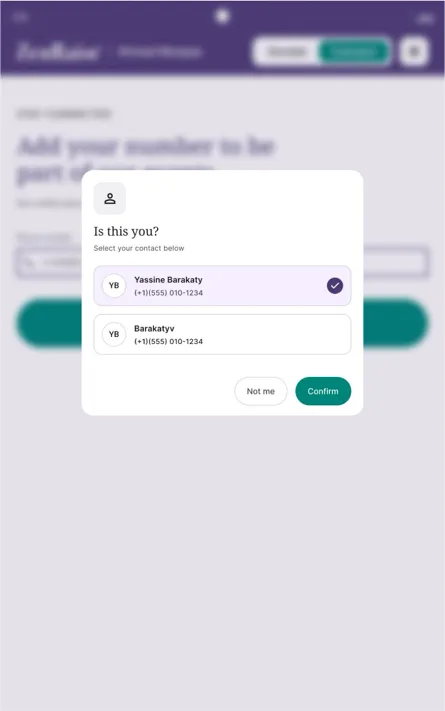
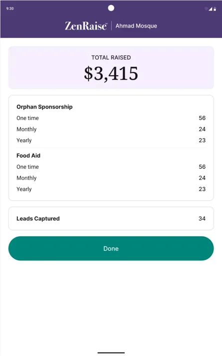

Tablet App
ZenRaise Turning cash-in-a-box collection into a documented, recurring system


Context
ZenRaise replaces the clipboard-and-cashbox way mosques and community organizations collect donations at events. Staff run the same night with dozens of donors, multiple giving programs, and a card reader — often with no dedicated tech person on hand.
Problem
Manual collection left no real record: no reliable way to see how much came in, no way to compare one event's performance against another's, and no way to set up recurring gifts instead of one-off cash. When an event ended, organizers had to wait on someone to tally totals by hand before they could report a number. On top of that, whoever was running the tablet that night needed to get a card reader working in minutes with no technical background, and donors themselves needed a screen simple enough to understand what they were giving to and how often, without confusion between programs.
My Role
UX/UI designer, solely responsible for the end-to-end design of ZenRaise — flows, UI, and the interactive prototype, including the micro-interactions and transition animations used throughout the app.
Key Decisions
- Designed a guided 3-step setup — select event, pair reader, ready to collect — with a live Bluetooth pairing state, so any staff member, not just a technical one, could get a tablet collecting money in under a minute.
- Tied every donation to the event selected at setup, so totals for each event stay separated automatically, turning "which event performs better" from a guess into a real, comparable number.
- Split the donation input by program type instead of forcing one pattern on both: a dollar amount with quick presets for one program, and a per-recipient stepper at a fixed rate for another — since the two are fundamentally different kinds of giving.
- Made recurring frequency (monthly / yearly) a visible choice on the main donation screen itself, not a secondary setting, since moving people from one-time to recurring giving was one of the client's core goals.
- Added phone-number recognition — "Is this you?" — that greets a returning donor by name instead of treating them as new every time, giving the organization one clean donor record instead of duplicates scattered across events.
- Surfaced an always-available event-details screen — total raised, broken down by program and frequency, plus leads captured — reachable from sign out, so ending a shift instantly produces the number organizers used to wait on someone to tally by hand.
- Designed the entire system on Material Theme Builder with vector-based components throughout, since the client's stated goal was to eventually white-label ZenRaise and resell it to partner organizations under their own colors and branding.



Outcome
ZenRaise is live on the App Store — in use at real events, collecting real donations from real donors.
Reflection
Two decisions outside the screens themselves shaped this project as much as any single flow. Building on Material Theme Builder from day one meant that when the white-label ask came up, it was a token and font swap across the whole app, not a redesign — the investment paid off exactly as intended. And working in genuinely fast feedback loops with the client — quick check-ins instead of long silent build cycles — caught misdirection early instead of after a week of polishing something nobody asked for. I also started using AI tools to sanity-check finished screens for typos and small inconsistencies before handoff, a five-minute pass that quietly saved a few rounds of embarrassing fixes.